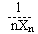
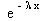

Verovatnoca i statistika
sept. '95.
.
1. Tri strelca gadjaju isti cilj nezavisno jedan od drugog i svaki po jedanput. Prvi, drugi i treci strelac pogadjaju cilj redom sa verovatnocama p1 = 0.2, p2 = 0.4 i p3 = 0.7.
a) Kolika je verovatnoca da ce cilj biti pogodjen tacno 2 puta?
b) Ako je cilj pogodjen tacno 2 puta, kolika je verovatnoca da je cilj promasio prvi strelac?
2. Kocka za igru cije su strane numerisane brojevima: 1, 2, 3, 4, 5, i 6 baca se dok se jedna od strana ne pojavi dva puta. Neka je X broj izvedenih bacanja. Odrediti raspodelu i matematicko ocekivanje slucajne velicine X.
3. Dat je niz nezavisnih slucajnih velicina koje imaju eksponencijalnu raspodelu sa parametrom l. Neka je Yn =. Ispitati konvergenciju u verovatnoci, skoro sigurnu i srednje kvadratnu konvergenciju niza slucajnih velicina (Yn).
4. Obelezje X ima ravnomernu raspodelu na intervalu (q, 2q), gde je q > 0. Na osnovu uzorka (X1, X2, ..., Xn) odrediti ocenu maksimalne verodostojnosti nepoznatog parametra q i ispitati postojanost tako dobijene ocene.
5. Iz populacije na kojoj obelezje X ima normalnu raspodelu dobijen je sledeci uzorak: 215, 228, 204, 219, 225, 236, 222, 217, 229, 226, 218, 220, 193, 212, 240, 227, 220, 214, 221, 214. Na osnovu ovog uzorka odrediti 95%-ni dvostrani interval poverenja za nepoznatu disperziju raspodele obelezja.
6. Obelezje X ima gustinu raspodele j(x) = l , , l > 0. Na osnovu uzorka (X1, ..., X1000) i za datu verovatnocu greske prve vrste a = 0.05 odrediti najbolju kriticnu oblast za testiranje hipoteze H0(l = 1), protiv alternative H1(l = 2).